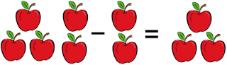

resta, también conocida como sustracción, es una operación que consiste en sacar, recortar, empequeñecer, reducir o separar algo de un todo. Restar es una de las operaciones esenciales de la matemática y se considera como la más simple junto a la suma, que es el proceso inverso.
La resta consiste en el desarrollo de una descomposición: ante una determinada cantidad, debemos eliminar una parte para obtener el resultado, que recibe el nombre diferencia. Por ejemplo: si tengo nueve peras y regalo tres, me quedaré con seis peras (9-3=6). En otras palabras, a la cantidad nueve le quito tres y la diferencia será seis. El primer número se conoce como minuendo y el segundo, como sustraendo; por lo tanto: minuendo – sustraendo = diferencia.
| Inicio | Power by Aprendiz Sena 2017 |